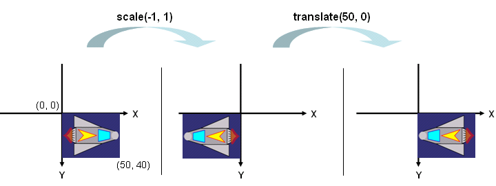

Transform the player:
playerObject.setAttribute("transform",
"translate(" + player.size.w + ", 0) scale(-1, 1)");
- The transform statement above means:
- Scaling the player by (-1, 1)
- Then translating (player.size.w, 0)
- player.size.w is the width of the player
- The figures below show the process of the transformation

- The width of the player in this example is 50
- In the figure above, increasing y axis values are shown in the downwards direction
- This is also true for SVG